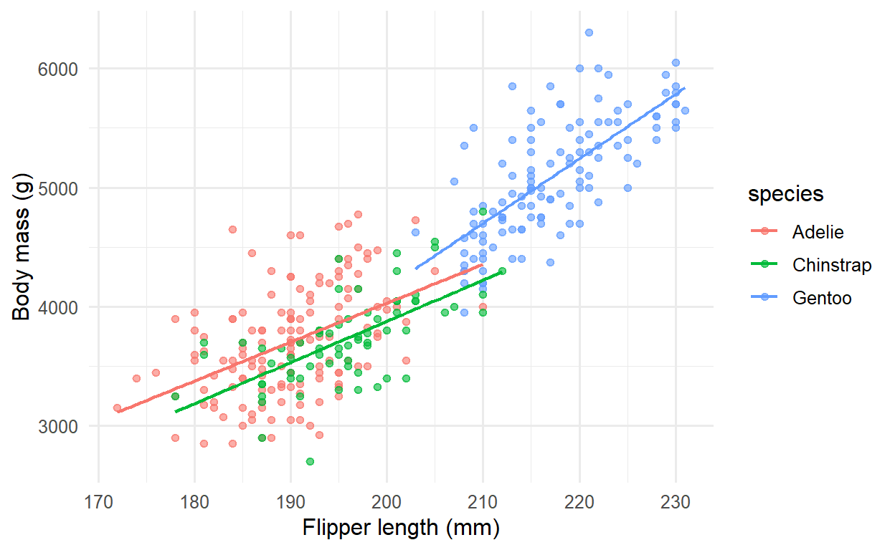

Course 2 — #courses
Note
Workflow lab: Goal → Approach → Execution → Check → Report.
gtsummary whose numbers trace directly to the fitted model.The regression tools covered across Course 2.
Breiman’s 1998 essay The Two Cultures and Shmueli’s 2010 essay To Explain or to Predict? draw the same line from opposite sides. In explanatory modelling the goal is inference — what is the estimated effect of X on Y, adjusted for confounders? — and the right evaluation metric is bias-unbiasedness, interval coverage, and interpretability. In predictive modelling the goal is accuracy on unseen data, and the right evaluation metric is out-of-sample loss, calibration, and decision utility. The statistical machinery overlaps but the habits around it do not; a regression that makes an excellent explanation often makes a lacklustre prediction, and vice versa.
Reporting guidelines are the mechanism by which the field enforces discipline around these two cultures. STROBE for observational studies, CONSORT for randomised trials, STARD for diagnostic accuracy, and TRIPOD (now TRIPOD-AI) for prediction models each specify the items a reader needs to evaluate the claim. A checklist filled in as you write is much easier than one filled in at submission.
Fit a single linear model to the penguins data and present it two ways: once as an explanatory analysis (what drives body mass?) and once as a predictive model (can we predict body mass on held-out birds?).

Explanatory evaluation: effect sizes with intervals, residual diagnostics, and adjusted R².
# A tibble: 1 × 5
r.squared adj.r.squared sigma df df.residual
<dbl> <dbl> <dbl> <dbl> <int>
1 0.867 0.865 296. 4 328Predictive evaluation: a 5-fold split, hand-coded to keep the example transparent.
k <- 5
folds <- sample(rep(seq_len(k), length.out = nrow(peng)))
rmse_k <- sapply(seq_len(k), function(i) {
tr <- peng[folds != i, ]
te <- peng[folds == i, ]
f <- lm(body_mass_g ~ flipper_length_mm + sex + species, data = tr)
sqrt(mean((predict(f, te) - te$body_mass_g)^2))
})
mean_rmse <- mean(rmse_k)
mean_rmse[1] 294.9655| Characteristic | Beta | 95% CI | p-value |
|---|---|---|---|
| (Intercept) | -366 | -1,412, 681 | 0.5 |
| flipper_length_mm | 20 | 14, 26 | <0.001 |
| sex | |||
| female | — | — | |
| male | 530 | 456, 605 | <0.001 |
| species | |||
| Adelie | — | — | |
| Chinstrap | -88 | -179, 3.5 | 0.060 |
| Gentoo | 836 | 669, 1,004 | <0.001 |
| Abbreviation: CI = Confidence Interval | |||
In the Palmer penguins dataset (n = 333), body mass was associated with flipper length, sex, and species (adjusted R² = 0.87). Out-of-sample performance, estimated by 5-fold cross-validation, was RMSE = 295 g.
| Design | Guideline | URL |
|---|---|---|
| Randomised trial | CONSORT | https://www.consort-statement.org/ |
| Observational study | STROBE | https://www.strobe-statement.org/ |
| Diagnostic-accuracy study | STARD | https://www.equator-network.org/reporting-guidelines/stard/ |
| Prediction-model study | TRIPOD / TRIPOD-AI | https://www.tripod-statement.org/ |
| Systematic review | PRISMA | http://prisma-statement.org/ |
R version 4.5.2 (2025-10-31 ucrt)
Platform: x86_64-w64-mingw32/x64
Running under: Windows 11 x64 (build 26200)
Matrix products: default
LAPACK version 3.12.1
locale:
[1] LC_COLLATE=English_Germany.utf8 LC_CTYPE=English_Germany.utf8
[3] LC_MONETARY=English_Germany.utf8 LC_NUMERIC=C
[5] LC_TIME=English_Germany.utf8
time zone: Europe/Berlin
tzcode source: internal
attached base packages:
[1] stats graphics grDevices utils datasets methods base
other attached packages:
[1] palmerpenguins_0.1.1 broom_1.0.12 gtsummary_2.5.0
[4] lubridate_1.9.5 forcats_1.0.1 stringr_1.6.0
[7] dplyr_1.2.1 purrr_1.2.2 readr_2.2.0
[10] tidyr_1.3.2 tibble_3.3.1 ggplot2_4.0.3
[13] tidyverse_2.0.0
loaded via a namespace (and not attached):
[1] gt_1.3.0 sass_0.4.10 generics_0.1.4
[4] xml2_1.5.2 stringi_1.8.7 lattice_0.22-9
[7] hms_1.1.4 digest_0.6.39 magrittr_2.0.4
[10] evaluate_1.0.5 grid_4.5.2 timechange_0.4.0
[13] RColorBrewer_1.1-3 cards_0.7.1 fastmap_1.2.0
[16] broom.helpers_1.22.0 jsonlite_2.0.0 Matrix_1.7-5
[19] backports_1.5.1 mgcv_1.9-4 scales_1.4.0
[22] labelled_2.16.0 cli_3.6.6 rlang_1.2.0
[25] litedown_0.9 commonmark_2.0.0 splines_4.5.2
[28] base64enc_0.1-6 withr_3.0.2 yaml_2.3.12
[31] otel_0.2.0 tools_4.5.2 tzdb_0.5.0
[34] vctrs_0.7.3 R6_2.6.1 lifecycle_1.0.5
[37] fs_2.1.0 htmlwidgets_1.6.4 pkgconfig_2.0.3
[40] pillar_1.11.1 gtable_0.3.6 glue_1.8.1
[43] haven_2.5.5 xfun_0.57 tidyselect_1.2.1
[46] knitr_1.51 farver_2.1.2 htmltools_0.5.9
[49] nlme_3.1-169 rmarkdown_2.31 labeling_0.4.3
[52] compiler_4.5.2 S7_0.2.2 markdown_2.0